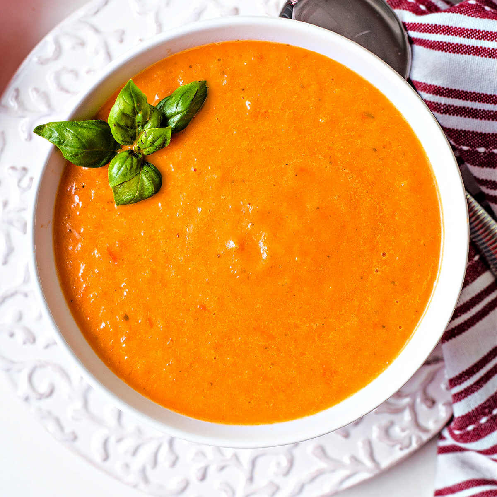

Creamy Tomato Soup

Description
A delicious cream based tomato soup that you'll want to have day after day. One of my favorite dishes my wife has made for me.
Pairs great with a nice warm grilled cheese!
Ingredients
- 1 can-crushed tomatoes
1 box of chicken broth
- 1 tsp- oregano
- 1 tsp- basil
- 2 cups- heavy whipping cream
Steps
- Add can of crushed tomatoes and a box of chicken broth to medium sized crock-pot
Measure out a tsp of oregano and a tsp of basil and mix in
- Let sit on low for 8 hours
- Once 8 hours is up turn heat off
- Mix in 2 cups of heavy whipping cream
- Serve hot with a delicious grilled cheese sandwhich